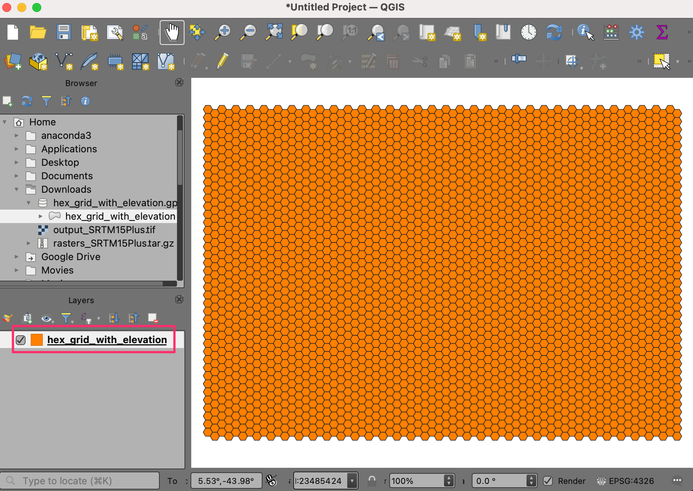
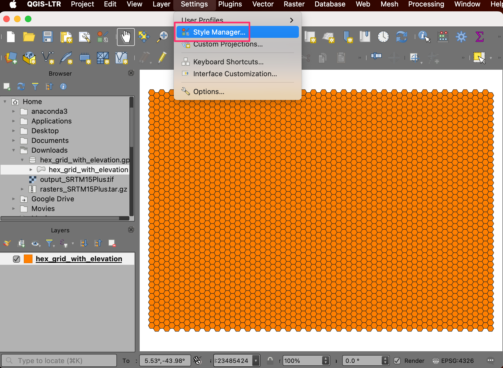
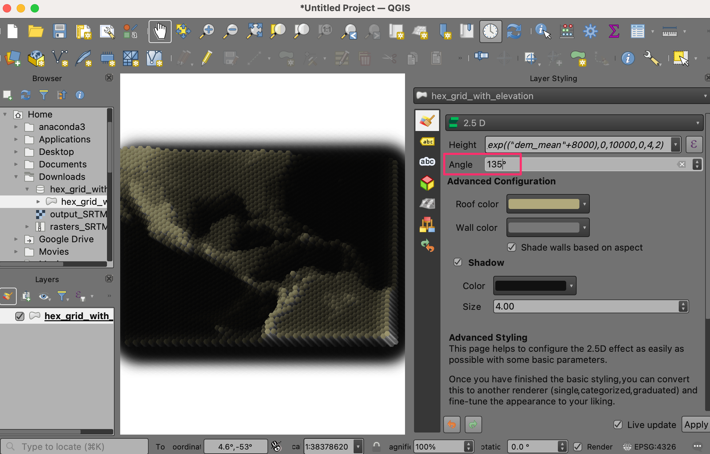
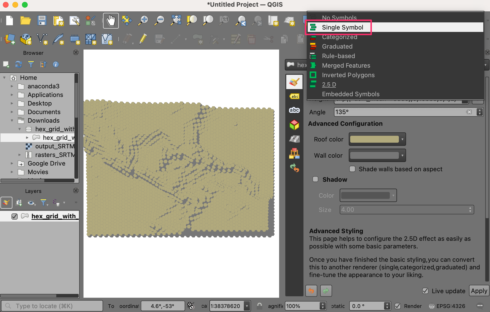

Creating a Block World Map (QGIS3)¶
Contributed by: Steven Kim
In the previous tutorial Basic Filtering and Styling with Expressions (QGIS3) we looked at how simple expressions can be used to filter and style data in QGIS. We expand on this by creating a block world out of a hex grid with elevation values.
Overview of the task¶
We will take a hex grid containing elevation values and use a mathematical function to set a height variable for the 2.5d renderer and a conditional statement to apply a color ramp.

Other skills you will learn¶
Discovering and downloading elevation datasets.
Creating a hexagonal grid and extracting raster statistics for each grid cell.
Adding a new color ramp to QGIS.
Get the data¶
OpenTopography provides access to many openly licensed elevation datasets. We will extract and download a DEM for your region of interest from a global DEM and Ocean Bathymetry dataset hosted on OpenTopography.
Visit the Global Bathymetry and Topography at 15 Arc Sec: SRTM15+ V2.5.5 data page on OpenTopography website. This is a 500m resolution global dataset derived from SRTM DEM and various ocean bathymetry dataset.

Scroll down to the 1. Select area of data to process section. Click on the SELECT A REGION button and draw a rectangle covering your region of interest.

Once the region is set, scroll down to the 2. Data Outputs Formats section and select
GeoTiff. Leave all other options to default and scroll down to the Job Description section. Enter your email address to be notified when the download is ready. Click SUBMIT button.

The download may take a few minutes to get processed. Once ready, you will receive a link to download the selected subset. Download the file to your computer. The downloaded file is a tar compressed file that needs to be uncompressed to be opened in QGIS. On Windows, you may use an external program like 7-Zip to uncompress and extract the
output_SRTM15Plus.tiffile.

In QGIS, locate the
output_SRTM15Plus.tiffile in the Browser. Drag and drop it to the QGIS Canvas. A new layeroutput_SRTM15Pluswill be added to the Layers panel.

Open the Processing Toolbox from . Search and locate the algorithm. Double-click to open it.

In the Create Grid dialog, choose
Hexagonas the Grid type. We will create a grid spanning the entire DEM. So for the Grid extent, click the down arrow and select .

Our selected region is pretty big, so we can create a 1 degree grid. Select
1for both Horizontal spacing and Vertical spacing. If you are working in a smaller region, you may choose a smaller grid spacing. Leave other options to their default values and click the Run button to create the grid.

A new layer
Gridwill be added to the Layers panel. We will now extract the minimum, maximum and average elevation values in each grid polygon. Select theGridlayer and locate the algorithm from the Processing Toolbox. Double-click to open it.

Select
Gridas the Input layer andoutput_SRTM15Plusas the Raster layer. Enterdem_as the Output column prefix. Next we want to configure what statistics we want to extract from the raster. Click the … button next to Statistics to calculate.

Check the options for
Mean,MaximumandMinimumvalues and click OK. We will save the results to a file. Click the … button next to Zonal Statistics and select Save to File….

Browse to a folder on your computer and enter the file name as
hex_grid_with_elevation. Make sure the file type is selected as GeoPackage files (*.gpkg). Click Save. Once the Zonal Statistics dialog is configured, click Run.

The processing may take a few minutes depending on the size of your grid. Once the calculations are complete, a new layer
hex_grid_with_elevationwill be added to the Layers panel. This is a vector layer having attributesdem_mean,dem_minanddem_maxcontaining elevation statistics extracted from the DEM.

For convenience, you may directly download a copy of the prepared grid from below:
Data Source [OPENTOPOGRAPHY]
Procedure¶
Locate the
hex_grid_with_elevation.gpkgfile in the QGIS Browser and expand it. Select thehex_grid_with_elevationlayer and drag it to the canvas.

A new layer
hex_grid_with_elevationwill now be loaded in QGIS and you should see a hex grid.

Before continuing, we must first add a color ramp suitable for coloring DEMs. Click on Settings in the menubar and select Style Manager.

Click on the plus sign Add item at the bottom and select .

Scroll done the color ramps until you find wiki-1.02. There may be several with the same name, just click on one and click OK.

At the “Save New Color Ramp” window, enter the value
wiki-1.02as the Name.

Click Save to exit the window, then click Close to exit Style Manager. Now the wiki-1.02 color ramp is available to use in your projects going forward.
Click on Open Layer Styling Panel and switch from Single Symbol to 2.5 D. Click the ε button next to Height:

In the Expression Builder, enter the following expression. This expression uses
scale_exp()function to change the range of the attribute valuesdem_meanfrom 0-10000 to 0-4 and to use an exponent of 2. The exponential scaling looks pretty in block world. The+8000is to make the bottom of the ocean equal zero.
scale_exp(("dem_mean"+8000),0,10000,0,4,2)
Change the Angle to
135.

We will be applying our own colors to the grids. Click off Shade walls based on aspect and Shadow.

You should see the topography of region begin to take shape. Click on Open Layer Styling Panel and switch from 2.5D back to Single Symbol.

In the Symbol window, notice there are two Geometry Generators, each with a Simple Fill layer type. The first Simple Fill is the top face of each block, whereas the second Simple Fill is the side face.

Click on the first Simple Fill to change the color of the top face. Click on Data define override button for the Fill color and select Edit… on the menu.

This brings up the Expression Builder dialog for Fill color. Enter the following expression. This expression has a
CASEconditional statement to use wiki-1.02 colors when value of the attributedem_meanis greater than or equal to zero and green-blue colors whendem_meanis less than zero.
CASE WHEN "dem_mean" >= 0 THEN ramp_color('wiki-1.02',scale_linear("dem_min",0,1500,0.4,1)) ELSE ramp_color('GnBu',scale_linear("dem_mean",-6000,0,1,0)) END
The hex grid is now rendered in colors determined by our expression. Click on Data define override button for the Fill color and select Copy on the menu.

Click on Data define override button for the Stroke color and select Paste on the menu.

You should see the colors take effect and our map is finished. Feel free to experiment with the expressions in this tutorial, like changing parameters in the height function or adding and trying new color ramps.

If you want to give feedback or share your experience with this tutorial, please comment below. (requires GitHub account)